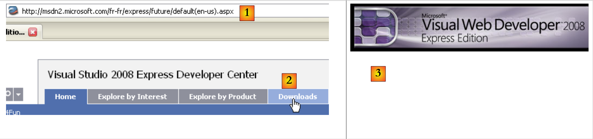
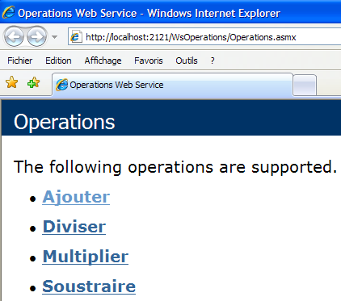
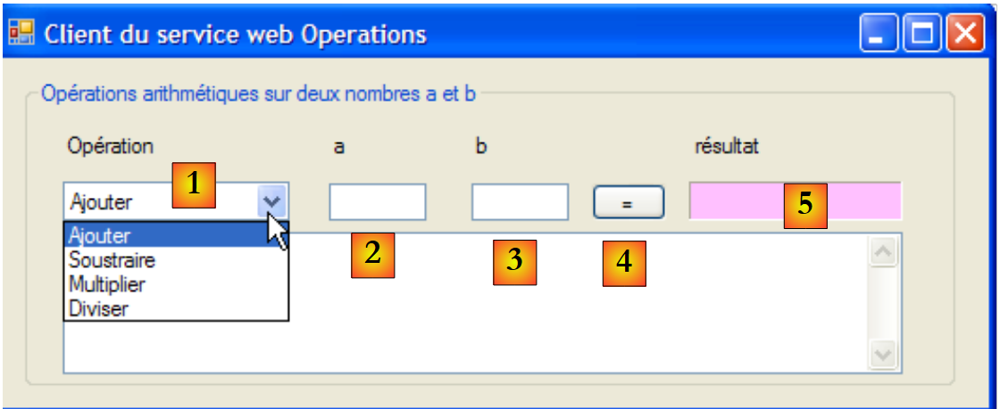
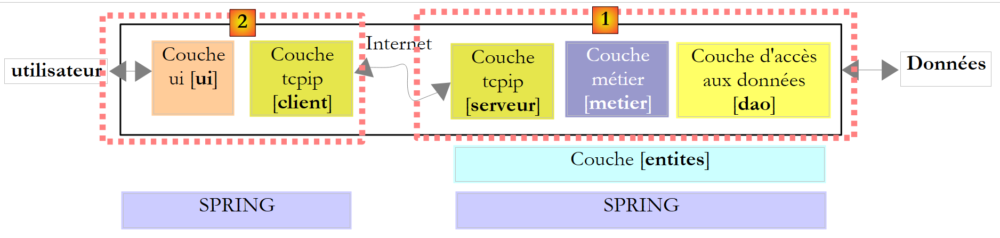
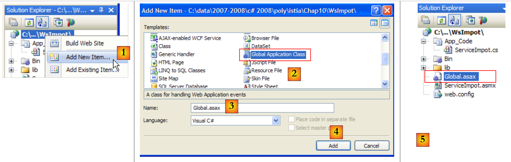
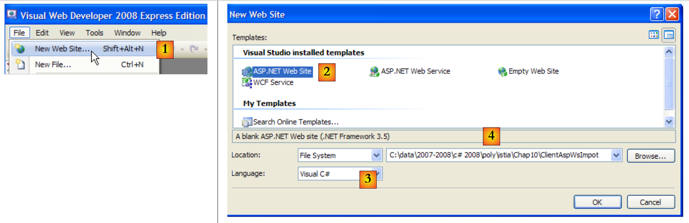
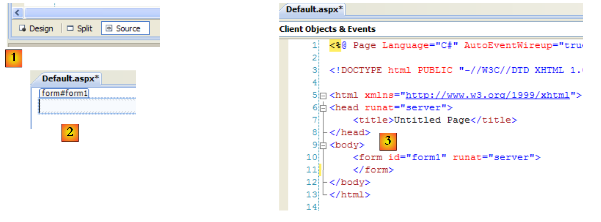
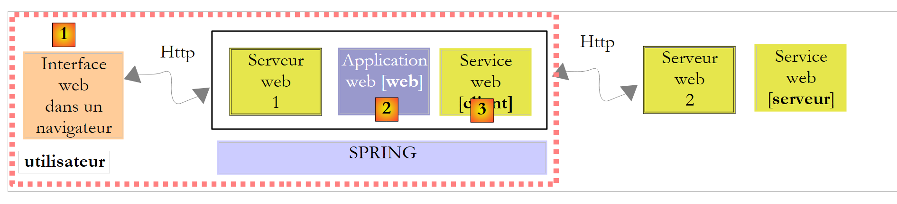

12. Services Web
12.1. Introduction
In the previous chapter, we presented several Tcp-Ip client-server applications. Since client and server exchange lines of text, they can be written in any language. The client simply needs to know the dialog protocol expected by the server.
The Web services are also Tcp-Ip server applications. They have the following characteristics:
- They are hosted by web servers, and the client-server exchange protocol is HTTP (HyperText Transport Protocol), a protocol above TCP-IP.
- The Web service has a standard dialog protocol, regardless of the service provided. A Web service offers various services S1, S2, .., Sn. Each of these expects parameters supplied by the client, and returns a result to the client. For each service, the client needs to know :
- exact name of department If
- the list of parameters to be supplied and their type
- the type of result returned by the service
Once these elements are known, the client-server dialog follows the same format, whatever the web service being queried. In this way, client writing is standardized.
- For security reasons against attacks from internet, many organizations have private networks and only open certain ports on their servers to Internet: essentially port 80 of the web service. All other ports are locked. Client-server applications such as those presented in the previous chapter are built within the private network (intranet) and are generally not accessible from the outside. Hosting a service on a web server makes it accessible to the whole internet community.
- The Web service can be modeled as a remote object. The services offered then become methods of this object. A client can access this remote object as if it were local. This hides the entire network communication layer and allows you to build a client independent of this layer. If the network layer changes, the client does not need to be modified.
- As with the Tcp-Ip client-server applications presented in the previous chapter, client and server can be written in any language. They exchange lines of text. These consist of two parts:
- headers required for the HTTP protocol
- the message body. For a response from the server to the client, this is in XML (eXtensible Markup Language) format. For a request from the client to the server, the message body can take several forms, including XML. The client's XML request may have a special format called SOAP (Simple Object Access Protocol). In this case, the server response also follows the SOAP format.
The architecture of a client/server application based on a web service is as follows:
 |
This is an extension of the 3-layer architecture, to which specialized network communication classes are added. We've already come across a similar architecture with the Windows graphical client/server application Tcp d'impôts in paragraph 11.9.1.
Let's explain these generalities with a first example.
12.2. A first Web service with Visual Web Developer
We're going to build a first client/server application with the following simplified architecture:
 |
12.2.1. The server side
We have indicated that a web service is hosted by a web server. Writing a web service falls within the general framework of server-side web programming. We've already had occasion to write web clients, which is also web programming, but this time on the client side. The term web programming most often refers to server-side programming rather than client-side programming. To develop web services or, more generally, web applications, Visual C# is not the right tool. We'll be using Visual Developer, one of the Express versions of Visual Studio 2008 available for download [2] at [1]: [http://msdn.microsoft.com/en-fr/express/future/bb421473(en-us).aspx] (May 2008):
 |
- [1]: download address
- [2]: Downloads tab
- [3] : download Visual Developer 2008
To create an initial web service, proceed as follows after starting Visual Developer :
 |
- [1]: take the option File / New Web Site
- [2]: choose a ASP.NET Web Service
- [3] : choose the development language : C#
- [4]: indicate the folder in which to create the project
 |
- [5]: the project created in Visual Web Developer
- [6]: the project folder on disk
A web application is structured as follows in Web Developer :
- a root containing the web site documents (static web pages Html, images, dynamic web pages .aspx, web services .asmx, ...). Also included is the [web.config] file, which is the configuration file for the web application. It plays the same role as the [App.config] file for Windows applications and is structured in the same way.
- a folder [App_Code] containing classes and interfaces from the web site for compiling.
- a folder [App_Data] in which to place data used by [App_Code] classes. For example, this could contain a SQL Server *.mdf database.
[Service.asmx] is the web service whose creation we have requested. It contains only the following line:
<%@ WebService Language="C#" CodeBehind="~/App_Code/Service.cs" Class="Service" %>
The above source code is intended for the Web server that will host the application. In production mode, this server is usually IIS (Internet Information Server), Microsoft's web server. Visual Web Developer embeds a lightweight web server for use in development mode. The preceding directive tells the web server:
- [Service.asmx] is a Web service (directive WebService)
- written in C# (attribute Language)
- that the C# code for the web service is in the [~/App_Code/Service.cs] (attribut CodeBehind). This is where the web server will go to compile it.
- that the class implementing the web service is called Service (attribute Class)
The C# code [Service.cs] of the web service generated by Visual Developer is as follows:
using System.Web.Services;
[WebService(Namespace = "http://tempuri.org/")]
[WebServiceBinding(ConformsTo = WsiProfiles.BasicProfile1_1)]
// To allow this Web Service to be called from script, using ASP.NET AJAX, uncomment the following line.
// [System.Web.Script.Services.ScriptService]
public class Service : System.Web.Services.WebService
{
public Service () {
//Uncomment the following line if using designed components
//InitializeComponent();
}
[WebMethod]
public string HelloWorld() {
return "Hello World";
}
}
The class Service resembles a classic C# class, but with a few points to note:
- line 7: the class derives from the WebService defined in the System.Web.Services. This inheritance is not always compulsory. In this example in particular, it could be dispensed with.
- line 3: the class itself is preceded by an attribute [WebService(Namespace="http://tempuri.org/")] intended to give a namespace to the web service. A class vendor gives a namespace to its classes in order to give them a unique name and avoid conflicts with classes from other vendors that might have the same name. The same applies to Web services. Each web service must be identified by a unique name, ici by http://tempuri.org/. This name can be anything. It does not have to be a Uri Http.
- line 15: the method HelloWorld is preceded by a [WebMethod] which tells the compiler that the method must be made visible to remote clients of the web service. A method not preceded by this attribute is not visible to clients of the web service. This could be an internal method used by other methods, but not intended for publication.
- line 9: service constructor web. It is useless in our application.
The generated [Service.cs] class is transformed as follows:
using System.Web.Services;
[WebService(Namespace = "http://st.istia.univ-angers.fr")]
[WebServiceBinding(ConformsTo = WsiProfiles.BasicProfile1_1)]
public class Service : System.Web.Services.WebService
{
[WebMethod]
public string DisBonjourALaDame(string nomDeLaDame) {
return string.Format("Bonjour Mme {0}", nomDeLaDame);
}
}
The configuration file [web.config] generated for the web application is as follows:
<?xml version="1.0"?>
<!--
Note: As an alternative to hand editing this file you can use the
web admin tool to configure settings for your application. Use
the Website->Asp.Net Configuration option in Visual Studio.
A full list of settings and comments can be found in
machine.config.comments usually located in
\Windows\Microsoft.Net\Framework\v2.x\Config
-->
<configuration>
<configSections>
<sectionGroup name="system.web.extensions" type="System.Web.Configuration.SystemWebExtensionsSectionGroup, System.Web.Extensions, Version=3.5.0.0, Culture=neutral, PublicKeyToken=31BF3856AD364E35">
...
</sectionGroup>
</configSections>
<appSettings/>
<connectionStrings/>
...
</configuration>
The file is 140 lines long. It is complex and we won't comment on it. We'll keep it as is. Above are the <configuration>, <configSections>, <sectionGroup>, <appSettings>, <connectionString> that we have encountered in the [App.config] file of Windows applications.
We have an operational web service that can be run :
 |
- [1,2]: right-click on [Service.asmx] and ask to view the page in a browser
- [3]: Visual Web Developer launches its integrated web server and places its icon in the bottom right-hand corner of the taskbar. The web server is launched on a random port, ici 1906. The Uri displayed /WsHello is the name of the web site [4].
Visual Web Developer also launched a browser to display the requested page, namely [Service.asmx] :
 |
- in [1], the Uri of the page. We find the Uri of the site [http://localhost:1906/WsHello] followed by that of the page /Service.asmx.
- in [2], the .asmx suffix told the web server that this was not a normal web page (.aspx suffix) giving rise to a Html page, but a web service page. It then automatically generates a web page with a link for each method of the web service with the [WebMethod] attribute. These links allow you to test the methods.
Click on the link [2] above to go to the following page:
 |
- in [1], note the Uri [http://localhost:1906/WsHello/Service.asmx?op=DisBonjourALaDame] of the new page. This is the Uri of the web service, with one parameter op=M, where M is the name of one of the web service methods.
- Recall the signature of the [DisBonjourALaDame] method:
public string DisBonjourALaDame(string nomDeLaDame) ;
The method admits a parameter of type string and returns a string also. The page allows us to execute method [DisBonjourALaDame]: in [2] we set the value of parameter nomDeLaDame and in [3], we request execution of the method. We obtain the following result:
 |
- in [1], note that the Uri in the response is not identical to that in the request. It has changed.
- in [2], the server response web. Please note the following points:
- it's a XML answer, not HTML
- the result of the [DisBonjourALaDame] method is encapsulated in a <string> tag representing its type.
- tag <string> has an attribute xmlns (xml name space), which is the namespace we've given to our web service (line 1 below).
[WebService(Namespace = "http://st.istia.univ-angers.fr")]
[WebServiceBinding(ConformsTo = WsiProfiles.BasicProfile1_1)]
public class Service : System.Web.Services.WebService
To find out how the web browser made its request, look at the Html code in the test form:
- line 11: form values (tag form) will be posted (attribute method) to Url [ http://localhost:1906/WsHello/Service.asmx/DisBonjourALaDame] (attribute action).
- line 19: the input field is called nomDeLaDame (attribute name).
Requesting execution of the web [/Service.asmx] service enabled us to test its methods and gain a minimum understanding of client-server exchanges.
12.2.2. The customer section
 |
It is possible to implement the above remote web service client with a basic Tcp-Ip client. For example, here's the client/server dialog created with a client putty connected to remote web service (localhost,1906) :
- lines 1-5: messages sent by the customer putty
- line 1: POST command
- lines 6-10: server response. This means that the client can send the POST values.
- line 11: values posted in the form param1=val1¶m2=val2& .... Some characters must be in acceptable characters in a Url. This is what we previously called an encoded Url. Ici the form has a single parameter named nomDeLaDame. The posted value has a total of 23 characters. This size must be declared in the Http header on line 4.
- lines 12-22: server response
- line 22: the result of the web [DisBonjourALaDame] method.
With Visual C#, you can use a wizard to generate the client of a remote web service. This is what we'll see now.
 |
The layer [1] above is implemented by a Visual studio C# project of the type Windows application and named ClientWsHello :
 |
- in [1], the ClientWsHello in Visual C#
- in [2], the project's default namespace will be Customer (right-click on the project / Properties / Application). This namespace will be used to build the client namespace that will be generated.
- in [3], right-click on the project to add a reference to a remote web service
 |
- in [4], set the Uri of the web service built earlier
- in [4b], connect Visual C# to the web service designated by [4]. Visual C# will retrieve the description of the web service and use it to generate a client.
- in [5], once the description service web retrieved, Visual C# can display its public methods
- in [6], specify a namespace for the client to be generated. This will be added to the namespace defined in [2]. In this way, the client namespace will be Client.WsHello.
- by [6b] to validate the wizard.
- in [7], the reference to the web service WsHello appears in the project. In addition, a configuration file [app.config] has been created.
- in [8], view all project files.
- in [9], the reference to the web service WsHello contains various files that we won't go into here. We will, however, take a look at the [Reference.cs] file, which is the C# code for the generated client:
namespace Client.WsHello {
...
public partial class ServiceSoapClient : System.ServiceModel.ClientBase<Client.WsHello.ServiceSoap>, Client.WsHello.ServiceSoap {
public ServiceSoapClient() {
}
...
public string DisBonjourALaDame(string nomDeLaDame) {
Client.WsHello.DisBonjourALaDameRequest inValue = new Client.WsHello.DisBonjourALaDameRequest();
inValue.Body = new Client.WsHello.DisBonjourALaDameRequestBody();
inValue.Body.nomDeLaDame = nomDeLaDame;
Client.WsHello.DisBonjourALaDameResponse retVal = ((Client.WsHello.ServiceSoap)(this)).DisBonjourALaDame(inValue);
return retVal.Body.DisBonjourALaDameResult;
}
}
}
- line 1: the customer namespace generated is Client.WsHello. If you want to change this namespace, this is the place to do it.
- line 3: the class ServiceSoapClient is the generated client class. It's a proxy class in the sense that it will hide from the windows application the fact that a remote web service is being used. The windows application will use the WsHello via the local class Client.WsHello.ServiceSoapClient. To create an instance of the client, use the constructor on line 5 :
- line 8: the method DisBonjourALaDame is the client-side counterpart of the DisBonjourALaDame service web. The Windows application will use the remote method DisBonjourALaDame via the local method Client.WsHello.ServiceSoapClient.DisBonjourALaDame in the following form :
The [app.config] file generated is as follows:
<?xml version="1.0" encoding="utf-8" ?>
<configuration>
<system.serviceModel>
<bindings>
....
</bindings>
<client>
<endpoint address="http://localhost:1906/WsHello/Service.asmx"... />
</client>
</system.serviceModel>
</configuration>
From this file, we will retain only line 8, which contains the Uri of the web service. If this changes to Uri, the Windows client does not need to be rebuilt. Simply change the Uri in file [app.config].
Let's return to the architecture of the Windows application we want to build:
 |
We have built the [client] layer of the web service. The [ui] layer will be as follows:
 |
n° | type | name | role |
1 | TextBox | textBoxNomDame | lady's name |
2 | Button | buttonSalutations | to connect to the web service WsHello remote and query method DisBonjourALaDame. |
3 | Label | labelBonjour | the result returned by the web service |
The form code [Form1.cs] is as follows:
using System;
using System.Windows.Forms;
using Client.WsHello;
namespace ClientSalutations {
public partial class Form1 : Form {
public Form1() {
InitializeComponent();
}
private void buttonSalutations_Click(object sender, EventArgs e) {
// hourglass
Cursor=Cursors.WaitCursor;
// web query service
labelBonjour.Text = new ServiceSoapClient().DisBonjourALaDame(textBoxNomDame.Text.Trim());
// normal slider
Cursor = Cursors.Arrow;
}
}
}
- line 15: the web service client is instantiated. It is of type Client.WsHello.ServiceSoapClient. The namespace Client.WsHello is declared on line 3. The local method ServiceSoapClient().DisBonjourALaDame is called. We know that it queries the remote method of the same name in the web service.
12.3. A Web arithmetic operation service
We're going to build a second client/server application with the following simplified architecture:
 |
The previous web service offered a single method. We consider a Web service which will offer 4 arithmetic operations:
- ajouter(a,b) qui rendra a+b
- soustraire(a,b) qui rendra a-b
- multiplier(a,b) qui rendra a*b
- diviser(a,b) qui rendra a/b
which will be queried by the following graphical interface :
 |
- in [1], the operation to be performed
- in [2,3]: the operands
- in [4], the service call button web
- in [5], the result of the web service
12.3.1. The server side
We build a web service project with Visual Web Developer :
 |
- in [1], the web application WsOperations generated
- in [2], the web application WsOperations redesigned as follows:
- page web [Service.asmx] has been renamed [Operations.asmx]
- the [Service.cs] class has been renamed [Operations.cs]
- the [web.config] file has been removed to show that it is not essential.
The web [Service.asmx] page contains the following line:
<%@ WebService Language="C#" CodeBehind="~/App_Code/Operations.cs" Class="Operations" %>
The web service is provided by the following class [Operations.cs]:
using System.Web.Services;
[WebService(Namespace = "http://st.istia.univ-angers.fr/")]
[WebServiceBinding(ConformsTo = WsiProfiles.BasicProfile1_1)]
public class Operations : System.Web.Services.WebService
{
[WebMethod]
public double Ajouter(double a, double b)
{
return a + b;
}
[WebMethod]
public double Soustraire(double a, double b)
{
return a - b;
}
[WebMethod]
public double Multiplier(double a, double b)
{
return a * b;
}
[WebMethod]
public double Diviser(double a, double b)
{
return a / b;
}
}
To bring the web service online, we proceed as described in [3]. We then obtain the test page for the 4 methods of the web service WsOperations :

Readers are invited to try out all 4 methods.
12.3.2. The customer section
 |
With Visual C# we create a Windows application ClientWsOperations :
 |
- in [1], the ClientWsOperations in Visual C#
- in [2], the project's default namespace will be Customer (right-click on the project / Properties / Application). This namespace will be used to build the client namespace that will be generated.
- in [3], right-click on the project to add a reference to an existing web service
 |
- in [4], set the Uri of the web service built previously. To do this, look at what's displayed in the address field of the browser displaying the web service test page.
- in [4b], connect Visual C# to the web service designated by [4]. Visual C# will retrieve the description of the web service and use it to generate a client.
- in [5], once the description service web retrieved, Visual C# can display its public methods
- in [6], specify a namespace for the client to be generated. This will be added to the namespace defined in [2]. In this way, the client namespace will be Client.WsOperations.
- by [6b] to validate the wizard.
- in [7], the reference to the web service WsOperations appears in the project. In addition, a configuration file [app.config] has been created.
Remember that the client generated is of type Client.WsOperations.OperationsSoapClient where
- Client.WsOperations is the namespace of service client web
- Operations is the class of the remote web service.
Although there is a logical way of constructing this name, it is often easier to find it in the [Reference.cs] file, which is a hidden file by default. Its contents are as follows:
namespace Client.WsOperations {
...
public partial class OperationsSoapClient : System.ServiceModel.ClientBase<Client.WsOperations.OperationsSoap>, Client.WsOperations.OperationsSoap {
public OperationsSoapClient() {
}
...
public double Ajouter(double a, double b) {
...
}
public double Soustraire(double a, double b) {
...
}
public double Multiplier(double a, double b) {
...
}
public double Diviser(double a, double b) {
...
}
}
}
The methods Add, Subtract, Multiply, Divide of the remote web service will be accessed via the proxy methods of the same name (lines 8, 12, 16, 20) of the client of type Client.WsOperations.OperationsSoapClient (line 3).
All that remains is to build the graphical interface:
 |
n° | type | name | role |
1 | ComboBox | comboBoxOperations | list of arithmetic operations |
2 | TextBox | textBoxA | number a |
3 | TextBox | textBoxB | number b |
4 | Button | buttonExecute | polls the remote web service |
5 | Label | labelResult | the result of the operation |
The code for [Form1.cs] is as follows:
using System;
using System.Windows.Forms;
using Client.WsOperations;
namespace ClientWsOperations {
public partial class Form1 : Form {
// operations table
private string[] opérations = { "Ajouter", "Soustraire", "Multiplier", "Diviser" };
// department web to contact
private OperationsSoapClient opérateur = new OperationsSoapClient();
// manufacturer
public Form1() {
InitializeComponent();
}
private void Form1_Load(object sender, EventArgs e) {
// combo filling of operations
comboBoxOperations.Items.AddRange(opérations);
comboBoxOperations.SelectedIndex = 0;
}
private void buttonExécuter_Click(object sender, EventArgs e) {
// checking operation parameters a and b
textBoxMessage.Text = "";
bool erreur = false;
Double a = 0;
if (!Double.TryParse(textBoxA.Text, out a)) {
textBoxMessage.Text += "Nombre a erroné...";
}
Double b = 0;
if (!Double.TryParse(textBoxB.Text, out b)) {
textBoxMessage.Text += String.Format("{0}Nombre b erroné...", Environment.NewLine);
}
if (erreur) {
return;
}
// operation execution
Double c=0;
try {
switch (comboBoxOperations.SelectedItem.ToString()) {
case "Ajouter":
c=opérateur.Ajouter(a, b);
break;
case "Soustraire":
c=opérateur.Soustraire(a, b);
break;
case "Multiplier":
c=opérateur.Multiplier(a, b);
break;
case "Diviser":
c=opérateur.Diviser(a, b);
break;
}
// result display
labelRésultat.Text = c.ToString();
} catch (Exception ex) {
textBoxMessage.Text = ex.Message;
}
}
}
}
- line 3: namespace of remote web service client
- line 10: the client of the remote web service is instantiated at the same time as the form
- lines 17-21: the operations combo is filled in when the form is first loaded
- line 23: execution of operation requested by user
- lines 25-37: check that entries a and b are real numbers
- lines 41-54: a switch to execute the remote operation requested by the user
- lines 43, 46, 49, 52: the local client is queried. Transparently, it queries the remote web service.
12.4. A web tax calculation service
We're back with the now well-known tax calculation application. The last time we worked with it, we made it a remote Tcp server that could be called on the internet. We've now turned it into a web service.
The architecture of version 8 was as follows:
 |
The architecture of version 9 will be similar:
 |
This architecture is similar to that of version 8, described in paragraph 11.9.1, but where server and client Tcp are replaced by a service web and its proxy client. We're going to take over the entire [ui], [metier] and [dao] layers from version 8.
12.4.1. The server side
We build a web service project with Visual Web Developer :
 |
- in [1], the web application WsImpot generated
- in [2], the web application WsImpot redesigned as follows:
- page web [Service.asmx] has been renamed [ServiceImpot.asmx]
- the [Service.cs] class has been renamed [ServiceImpot .cs]
The web [ServiceImpot.asmx] page contains the following line:
<%@ WebService Language="C#" CodeBehind="~/App_Code/ServiceImpot.cs" Class="ServiceImpot" %>
The web service is provided by the following class [ServiceImpot.cs]:
using System.Web.Services;
[WebService(Namespace = "http://st.istia.univ-angers.fr/")]
[WebServiceBinding(ConformsTo = WsiProfiles.BasicProfile1_1)]
public class ServiceImpot : System.Web.Services.WebService
{
[WebMethod]
public int CalculerImpot(bool marié, int nbEnfants, int salaire)
{
return 0;
}
}
The web service will only expose the CalculerImpot on line 9.
Let's return to the client/server architecture of version 8:
 |
The Visual studio project on server [1] was as follows:
 |
- in [1], the project. It included the following elements:
- [ServeurImpot.cs]: the Tcp/Ip tax calculation server in the form of a console application.
- [dbimpots.sdf]: the SQL Server compact database from version 7 described in paragraph 9.8.5.
- [App.config]: application configuration file.
- in [2], the [lib] folder contains the DLL needed for the project:
- [ImpotsV7-dao]: the [dao] layer in version 7
- [ImpotsV7-metier]: the [metier] layer in version 7
- [antlr.runtime, CommonLogging, Spring.Core] for Spring
- in [3], the project references
The version's [metier] and [dao] layers already exist: they are those used in versions 7 and 8. They are in the form of DLL, which we integrate into the project as follows:
 |
- in [1] the [lib] folder of the version 8 server has been copied into the web service project of version 9.
- in [2] we modify the page properties to add the DLL from the [lib] folder [4] to the project references [3].
After this operation, we have all the layers required for the server [1] below:
 |
While the server elements [1], [server], [metier], [dao], [entities], [spring] are all present in the Visual Studio project, we are missing the element that will instantiate them at application startup web. In version 8, a main class with the static method [Main] did the job of instantiating the layers with the help of Spring. In a web application, the class capable of doing a similar job is the class associated with the [Global.asax] :
 |
- in [1], a new element is added to project web
- in [2], we choose the Global Application Class
- in [3], the default name proposed for this element
- in [4], we validate the addition of
- in [5], the new element was integrated into the
Let's look at the contents of the [Global.asax] file:
<%@ Application Language="C#" %>
<script runat="server">
void Application_Start(object sender, EventArgs e)
{
// Code that runs on application startup
}
void Application_End(object sender, EventArgs e)
{
// Code that runs on application shutdown
}
void Application_Error(object sender, EventArgs e)
{
// Code that runs when an unhandled error occurs
}
void Session_Start(object sender, EventArgs e)
{
// Code that runs when a new session is started
}
void Session_End(object sender, EventArgs e)
{
// Code that runs when a session ends.
}
</script>
The file is a mixture of web server tags (lines 1, 3, 30) and C# code. This was the only method used with ASP, the ancestor of ASP.NET, Microsoft's current technology for web programming. With ASP.NET, this method can still be used, but is not the default method. The default method is the "CodeBehind" method, which we've seen in web service pages, for example ici in [ServiceImpot.asmx]:
<%@ WebService Language="C#" CodeBehind="~/App_Code/ServiceImpot.cs" Class="ServiceImpot" %>
The CodeBehind specifies the location of the source code for page [ServiceImpot.asmx]. Without this attribute, the source code would be in page [ServiceImpot.asmx] with a syntax similar to that found in [Global.asax]. We won't keep the [Global.asax] file as it was generated, but its code allows us to understand what it's for:
- the class associated with Global.asax is instantiated at application startup. Its lifetime is that of the entire application. In concrete terms, it only disappears when the web server is stopped.
- the method Application_Start is executed next. This is the only time it will be executed. It is therefore used to instantiate objects shared by all users. These objects are placed :
- or in the static fields of the class associated with Global.asax. As this class is permanently present, any request from any user can read information from it.
- or the container Application. This container is also created when the application is started, and its lifetime is that of the application.
- to put data in this container, we write Application["key"]=value;
- to retrieve it, write T value=(T)Application["key"]; where T is the type of value.
- the method Session_Start is executed every time a new user makes a request. How do we recognize a new user? Each user (usually a browser) receives a session token, which is a string of characters unique to each user. Each time a new request is made, the user sends back the session token he or she received. This enables the web server to recognize the user. Over the course of a user's various requests, data specific to that user may be stored in the Session :
- to put data in this container, we write Session["key"]=value;
- to retrieve it, write T value=(T)Session["key"]; where T is the type of value.
By default, the lifetime of a session is limited to 20 minutes of user inactivity (c.a.d. the user has not sent back his session token for 20 minutes).
- the method Application_Error is executed when an exception not handled by application web is sent to server web.
- other methods are more rarely used.
After these generalities, what can we do for you? Global.asax ? We'll use his method Application_Start to initialize the [metier], [dao] and [entites] layers contained in DLL [ImpotsV7-metier, ImpotsV7-dao]. We will use Spring to instantiate them. Layer references created in this way will then be stored in static fields in the class associated with Global.asax.
In the first step, we deport the C# code from Global.asax in a class of its own. The project is evolving as follows:
 |
In [1], file [Global.asax] will be associated with class [Global.cs] [2] with the following single line:
<%@ Application Language="C#" Inherits="WsImpot.Global"%>
The Inherits="WsImpot.Global" indicates that the class associated with Global.asax inherits from the WsImpot.Global. This class is defined in [Global.cs] as follows :
using System;
using Metier;
using Spring.Context.Support;
namespace WsImpot
{
public class Global : System.Web.HttpApplication
{
// business layer
public static IImpotMetier Metier;
// method executed at application startup
private void Application_Start(object sender, EventArgs e)
{
// instantiations [metier] and [dao] layers
Metier = ContextRegistry.GetContext().GetObject("metier") as IImpotMetier;
}
}
}
- line 4: class namespace
- line 6: the class Global. You can give it any name you like. The important thing is that it derives from the System.Web.HttpApplication.
- line 9: a public static field containing a reference to the [metier] layer.
- line 12: the method Application_Start which will be executed when the application is started.
- line 15: Spring is used to exploit the [web.config] file, in which it will find the objects to be instantiated to create the [metier] and [dao] layers. There is no difference between using Spring with [App.config] in a Windows application, and using Spring with [web.config] in a web application. [web.config] and [App.config] also have the same structure. Line 15 stores the [metier] layer reference in the static field of line 9, so that this reference is available for all queries from all users.
The [web.config] file will be as follows:
<?xml version="1.0" encoding="utf-8" ?>
<configuration>
<configSections>
<sectionGroup name="spring">
<section name="context" type="Spring.Context.Support.ContextHandler, Spring.Core" />
<section name="objects" type="Spring.Context.Support.DefaultSectionHandler, Spring.Core" />
</sectionGroup>
</configSections>
<spring>
<context>
<resource uri="config://spring/objects" />
</context>
<objects xmlns="http://www.springframework.net">
<object name="dao" type="Dao.DataBaseImpot, ImpotsV7-dao">
<constructor-arg index="0" value="MySql.Data.MySqlClient"/>
<constructor-arg index="1" value="Server=localhost;Database=bdimpots;Uid=admimpots;Pwd=mdpimpots;"/>
<constructor-arg index="2" value="select limite, coeffr, coeffn from tranches"/>
</object>
<object name="metier" type="Metier.ImpotMetier, ImpotsV7-metier">
<constructor-arg index="0" ref="dao"/>
</object>
</objects>
</spring>
</configuration>
This is the [App.config] file used in version 7 of the application and studied in paragraph 9.8.4.
- lines 16-20: define a [dao] layer working with a MySQL5 database. This database was described in paragraph 9.8.1.
- lines 21-23: define the [metier] layer
Back to the server puzzle:
 |
At application startup, the [metier] and [dao] layers have been instantiated. The lifetime of these layers is that of the application itself. When is the web service instantiated? Every time a request is made to it. At the end of the request, the object that served it is deleted. So, at first glance, a web service is stateless. It cannot store information between two requests in fields that belong to it. It can store information in the user's session. To do this, the methods it exposes must be tagged with a special :
[WebMethod(EnableSession=true)]
public int CalculerImpot(bool marié, int nbEnfants, int salaire)
....
Above, line 1 authorizes the CalculerImpot to access the container Session which we mentioned earlier. We won't need to use this attribute in our application. The web service WsImpot will therefore be instantiated on each request and will be stateless.
We can now write the code [ServiceImpot.cs] that implements the web service:
using System.Web.Services;
using WsImpot;
[WebService(Namespace = "http://st.istia.univ-angers.fr/")]
[WebServiceBinding(ConformsTo = WsiProfiles.BasicProfile1_1)]
public class ServiceImpot : System.Web.Services.WebService
{
[WebMethod]
public int CalculerImpot(bool marié, int nbEnfants, int salaire)
{
return Global.Metier.CalculerImpot(marié, nbEnfants, salaire);
}
}
- line 10: the unique web service method
- line 12: we use the CalculerImpot of the [metier] layer. A reference to this layer is found in the static field Trade class Global. This belongs to the WsImpot (line 2).
We're now ready to launch the web service. First we need to run SGBD MySQL5 so that the database bdimpots is accessible. Once this has been done, we start [1] the web service:
 |
The browser then displays the page [2]. We follow the link :
 |
We give a value to each of the three parameters of the method CalculerImpot and request execution of the method. We obtain the following result, which is correct:

12.4.2. A Windows graphical client for the remote web service
Now that the web service has been written, let's move on to the client. Let's review the architecture of the client/server application:
 |
We now need to write the client [2]. The graphical interface will be identical to that of version 8:
 |
To write the [client] part of version 9, we'll start from the [client] part of version 8, then make the necessary modifications. We duplicate the Visual Studio project studied in paragraph 11.9.4.1, rename it ClientWsImpot and load it into Visual Studio :
 |
The Visual Studio solution for version 8 consisted of 2 projects:
- the [metier] [1] project, which was a Tcp client of the Tcp tax calculation server
- the [ui] [2] GUI project.
The changes to be made are as follows:
- the [metier] project must now be the customer of a web service
- the [ui] project must reference the DLL of the new [metier] layer
- the [metier] layer configuration in [App.config] must change.
12.4.2.1. The new layer [metier]
 |
- in [1], IImpotMetier is the [metier] layer interface and ImpotMetierTcp its implementation by a customer Tcp
- in [2], we remove the ImpotMetierTcp. We need to create another implementation of the IImpotMetier which will be a client of a web service.
- in [3], we call Customer the default namespace of the [metier] project. The DLL that will be generated will be called [ImpotsV9-metier.dll].
 |
- in [4], we create a reference to the web service WsImpot.
- in [5], we configure and validate it.
- in [6], the reference to the web service WsImpot file was created and a [app.config] file was generated.
In the hidden file [Reference.cs] :
- the namespace is Client.WsImpot
- the client class is called ServiceImpotSoapClient
- it has a unique signature method:
public int CalculerImpot(bool marié, int nbEnfants, int salaire) ;
All that remains is to implement the IImpotMetier :
namespace Metier {
public interface IImpotMetier {
int CalculerImpot(bool marié, int nbEnfants, int salaire);
}
}
We implement it with the ImpotMetierWs next :
using System.Net.Sockets;
using System.IO;
using Client.WsImpot;
namespace Metier {
public class ImpotMetierWs : IImpotMetier {
// remote web customer service
private ServiceImpotSoapClient client = new ServiceImpotSoapClient();
// tAX CALCULATION
public int CalculerImpot(bool marié, int nbEnfants, int salaire) {
return client.CalculerImpot(marié, nbEnfants, salaire);
}
}
}
- line 6: the class ImpotMetierWs implements the IImpotMetier.
- line 9: to the creation of an instance ImpotMetierWs, the field customer is initialized with a client instance of the web tax calculation service.
- line 12: the only the interface IImpotMetier to implement.
- line 13: we use the CalculerImpot of the client of the remote web tax calculation service. In the end, it's the method CalculerImpot of the remote web service to be queried.
The DLL of the project can be generated:
 |
- in [1], the [customer] project in its final state
- in [2], generation of the DLL of the project
- in [3], the DLL ImpotsV9-metier.dll is in the /bin/Release project folder.
12.4.2.2. The new [ui] layer
 |
The client's [client] layer has been written. We now need to write the [ui] layer. Back to the Visual Studio project:
 |
- in [1], the [ui] project from version 8
- in [2], the DLL ImpotsV8-metier of the old [metier] layer is replaced by the DLL ImpotsV9-metier of the new layer
- in [3], the DLL ImpotsV9-metier is added to the project references.
The second change occurs in [App.config]. Remember that this file is used by Spring to instantiate the [metier] layer. As this has changed, the configuration of [App.config] must change. On the other hand, [App.config] must be configured to reach the remote web tax calculation service. This configuration was generated in the [app.config] file of the [metier] project when the reference to the remote web service was added.
The [App.config] file thus becomes the following:
<?xml version="1.0" encoding="utf-8" ?>
<configuration>
<configSections>
<sectionGroup name="spring">
<section name="context" type="Spring.Context.Support.ContextHandler, Spring.Core" />
<section name="objects" type="Spring.Context.Support.DefaultSectionHandler, Spring.Core" />
</sectionGroup>
</configSections>
<spring>
<context>
<resource uri="config://spring/objects" />
</context>
<objects xmlns="http://www.springframework.net">
<object name="metier" type="Metier.ImpotMetierWs, ImpotsV9-metier">
</object>
</objects>
</spring>
<!-- web service -->
<system.serviceModel>
<bindings>
<basicHttpBinding>
<binding name="ServiceImpotSoap" closeTimeout="00:01:00" openTimeout="00:01:00"
receiveTimeout="00:10:00" sendTimeout="00:01:00" allowCookies="false"
bypassProxyOnLocal="false" hostNameComparisonMode="StrongWildcard"
maxBufferSize="65536" maxBufferPoolSize="524288" maxReceivedMessageSize="65536"
messageEncoding="Text" textEncoding="utf-8" transferMode="Buffered"
useDefaultWebProxy="true">
<readerQuotas maxDepth="32" maxStringContentLength="8192" maxArrayLength="16384"
maxBytesPerRead="4096" maxNameTableCharCount="16384" />
<security mode="None">
<transport clientCredentialType="None" proxyCredentialType="None"
realm="" />
<message clientCredentialType="UserName" algorithmSuite="Default" />
</security>
</binding>
</basicHttpBinding>
</bindings>
<client>
<endpoint address="http://localhost:2172/WsImpot/ServiceImpot.asmx"
binding="basicHttpBinding" bindingConfiguration="ServiceImpotSoap"
contract="WsImpot.ServiceImpotSoap" name="ServiceImpotSoap" />
</client>
</system.serviceModel>
</configuration>
- lines 15-18: Spring instantiates only one object, the layer [metier]
- line 16: the [metier] layer is instantiated by class [Metier.ImpotMetierWs], which is in DLL ImpotsV9-metier.
- lines 22-46: client configuration for remote web service. This is a copy/paste of the contents of the [app.config] file in the [metier] project.
We're ready to go. Run the application with Ctrl-F5 (service web must be started, SGBD MySQL5 must be started, port line 42 above must be correct):
 |
12.5. A web customer for the web tax calculation service
Let's return to the architecture of the client/server application we've just written:
 |
The [ui] layer above was implemented by a Windows graphical client. We now implement it with a web interface:
 |
This is an important change for users. At present, our client/server application, version 9, can serve several clients simultaneously. This is an improvement on version 8, where it only served one client at a time. The constraint is that users wishing to use the web tax calculation service must have the Windows client we've written on their workstations. In this new version, which we'll call version 10, users will be able to use their browser to access the web tax calculation service.
In the above architecture :
- the server side remains unchanged. It remains as it is in version 9.
- on the client side, the [service client web] layer remains unchanged. It has been encapsulated in DLL [ImpotsV9-metier]. We will reuse this DLL.
- in the end, the only change is to replace a Windows GUI with a web interface.
We're going to take a closer look at web server-side programming. As the aim of this document is not to teach web programming, we'll try to explain the approach we'll be taking, but without going into too much detail. There will therefore be a slightly "magic" in this section. However, we feel it is worth taking this step to show a new example of multi-layer architecture where one of the layers is changed.
The architecture of version 10 is as follows:
 |
We already have all the layers, except for [web]. To better understand what's going to be done, we need to be more precise about the client architecture. It will be as follows:
 |
- user web has a web form in his browser
- this form is sent to the web 1 server, which processes it through the [web] layer
- the [web] layer will need the client services of the remote web service, encapsulated in [ImpotsV9-metier.dll].
- the client of the remote web service will communicate with the web 2 server, which hosts the remote web service.
- the response from the remote web service is passed on to the client's web layer, which formats it into a page and sends it to the user.
Our work ici is therefore :
- build the web form that the user will see in his browser
- write the web application, which will process the user's request and send a response in the form of a new web page. This will in fact be the same as the form, to which we've added the amount of tax to be paid
- to write the "glue" that makes it all work together.
All this will be done using a new web site created with Visual Web Developer :
 |
- [1]: take the option File / New Web Site
- [2]: choose a ASP.NET Web Site
- [3] : choose the development language : C#
- [4]: indicate the folder in which to create the project
 |
- [5]: the project created in Visual Web Developer
- [Default.aspx] is a web page called the default page. It is the one that will be delivered if the Url is requested http://.../ClientAspImpot without specifying a document. This is the page that will contain the tax calculation form that the user will see in their browser.
- [Default.aspx.cs] is the class associated with the page, which will generate the form sent to the user and process it once it has been filled in and validated.
- [web.config] is the application configuration file. Unlike previous times, we're going to keep it.
If we return to the architecture we need to build :
 |
- [1] will be implemented by [Default.aspx]
- [2] will be implemented by [Default.aspx.cs]
- [3] will be implemented by DLL [ImpotV9-metier]
Let's start by implementing layer [3]. There are several steps:
 |
- in [1], the [lib] folder of the Windows 9 graphics client is copied into the web [ClientAspWsImpot] project folder. This is done using Windows Explorer. To display this folder in the Web Developer solution, refresh the solution with button [2].
- then add them to the project references [3,4,5]. The referenced Dll are automatically copied into the project's /bin folder [6].
We now have the Dll needed to run Spring, and the client layer for the remote web service has also been implemented. Although the code for the latter is present, its configuration remains to be done. In version 9, it was configured by the following file [App.config]:
<?xml version="1.0" encoding="utf-8" ?>
<configuration>
<configSections>
<sectionGroup name="spring">
<section name="context" type="Spring.Context.Support.ContextHandler, Spring.Core" />
<section name="objects" type="Spring.Context.Support.DefaultSectionHandler, Spring.Core" />
</sectionGroup>
</configSections>
<spring>
<context>
<resource uri="config://spring/objects" />
</context>
<objects xmlns="http://www.springframework.net">
<object name="metier" type="Metier.ImpotMetierWs, ImpotsV9-metier">
</object>
</objects>
</spring>
<!-- web service -->
<system.serviceModel>
<bindings>
<basicHttpBinding>
...
</basicHttpBinding>
</bindings>
<client>
<endpoint address="http://localhost:2172/WsImpot/ServiceImpot.asmx"
binding="basicHttpBinding" bindingConfiguration="ServiceImpotSoap"
contract="WsImpot.ServiceImpotSoap" name="ServiceImpotSoap" />
</client>
</system.serviceModel>
</configuration>
We take this configuration and integrate it into the [web.config] file as follows:
<?xml version="1.0"?>
<configuration>
<configSections>
<sectionGroup name="system.web.extensions"...>
...
</sectionGroup>
<!-- start Spring section -->
<sectionGroup name="spring">
<section name="context" type="Spring.Context.Support.ContextHandler, Spring.Core" />
<section name="objects" type="Spring.Context.Support.DefaultSectionHandler, Spring.Core" />
</sectionGroup>
<!-- end Spring section -->
</configSections>
<!-- start Spring configuration -->
<spring>
<context>
<resource uri="config://spring/objects" />
</context>
<objects xmlns="http://www.springframework.net">
<object name="metier" type="Metier.ImpotMetierWs, ImpotsV9-metier">
</object>
</objects>
</spring>
<!-- end Spring configuration -->
<!-- start remote web service client configuration -->
<system.serviceModel>
<bindings>
<basicHttpBinding>
...
</basicHttpBinding>
</bindings>
<client>
<endpoint address="http://localhost:2172/WsImpot/ServiceImpot.asmx"
binding="basicHttpBinding" bindingConfiguration="ServiceImpotSoap"
contract="WsImpot.ServiceImpotSoap" name="ServiceImpotSoap" />
</client>
</system.serviceModel>
<!-- end remote web service client configuration -->
<!-- other configurations already present in the generated web.config -->
...
</configuration>
Note that line 37 refers to the port of the remote web service. This port may change, as Visual Developer launches the web service on a random port.
Let's return to the architecture of the web client we need to build:
 |
- [1] will be implemented by [Default.aspx]
- [2] will be implemented by [Default.aspx.cs]
- [3] has been implemented by DLL [ImpotV9-metier]
We have just implemented layer [3]. Let's move on to the web interface [1] implemented by page [Default.aspx]. Double-click on page [Default.aspx] to switch to design mode.
 |
There are two ways to build a web page:
- graphically as in [2]. You must then select [Design] mode in [1]. This button bar can be found at the bottom of the status bar of the web page editor.
- with a tag language as in [3]. You must then select [Source] mode in [1].
Design] and [Source] modes are bidirectional: a modification made in [Design] mode translates into a modification in [Source] mode, and vice versa. Remember that the web form to be presented in the browser is as follows:
 |
- in [1], the form displayed in a browser
- in [2], the components used to build it
- in [3], the form design page. It includes the following elements:
- line A, two radio buttons named RadioButtonOui and RadioButtonNon
- line B, an input field named TextBoxEnfants and a label called LabelErreurEnfants
- line C, an input field named TextBoxSalaire and a label called LabelErreurSalaire
- line D, a label called LabelImpot
- e line, two buttons named ButtonCalculer and ButtonEffacer
Once a component has been placed on the design surface, its properties can be accessed:
 |
- in [1], access to component properties
- in [2], the property sheet for component [LabelErreurEnfants ]
- in [3], (ID) is the component name
- in [4], we've given the label characters a red color.
It's not enough to simply place components on the form and then set their properties. You also need to organize their layout. In a Windows graphical interface, this layout is absolute. Just drag the component where you want it to be. In a web page, it's different, more complex but also more powerful. This aspect will not be covered in ici.
The source code [Default.aspx] generated by this design is as follows:
<%@ Page Language="C#" AutoEventWireup="true" CodeFile="Default.aspx.cs" Inherits="_Default" %>
<!DOCTYPE html PUBLIC "-//W3C//DTD XHTML 1.0 Transitional//EN" "http://www.w3.org/TR/xhtml1/DTD/xhtml1-transitional.dtd">
<html xmlns="http://www.w3.org/1999/xhtml">
<head runat="server">
<title>Calculer votre impôt</title>
</head>
<body bgcolor="#ffff99">
<h2>
Calculer votre impôt</h2>
<form id="form1" runat="server">
<asp:ScriptManager ID="ScriptManager2" runat="server" EnablePartialRendering="true" />
<asp:UpdatePanel runat="server" ID="UpdatePanelPam">
<ContentTemplate>
<div>
</div>
<table>
<tr>
<td>
Etes-vous marié(e)
</td>
<td>
<asp:RadioButton ID="RadioButtonOui" runat="server" GroupName="statut" Text="Oui" />
<asp:RadioButton ID="RadioButtonNon" runat="server" GroupName="statut" Text="Non"
Checked="True" />
</td>
</tr>
<tr>
<td>
Nombre d'enfants
</td>
<td>
<asp:TextBox ID="TextBoxEnfants" runat="server" Columns="3"></asp:TextBox>
</td>
<td>
<asp:Label ID="LabelErreurEnfants" runat="server" ForeColor="#FF3300"></asp:Label>
</td>
</tr>
<tr>
<td>
Salaire annuel
</td>
<td>
<asp:TextBox ID="TextBoxSalaire" runat="server" Columns="8"></asp:TextBox>
</td>
<td>
<asp:Label ID="LabelErreurSalaire" runat="server" ForeColor="#FF3300"></asp:Label>
</td>
</tr>
<tr>
<td>
Impôt à payer
</td>
<td>
<asp:Label ID="LabelImpot" runat="server" BackColor="#99CCFF"></asp:Label>
</td>
</tr>
</table>
<br />
<table>
<tr>
<td>
<asp:Button ID="ButtonCalculer" runat="server" Text="Calculer" OnClick="ButtonCalculer_Click" />
</td>
<td>
<asp:Button ID="ButtonEffacer" runat="server" Text="Effacer" OnClick="ButtonEffacer_Click" />
</td>
<td>
</td>
</tr>
</table>
</div>
</ContentTemplate>
</asp:UpdatePanel>
</form>
</body>
</html>
The form components are identified by lines 23, 24, 33, 36, 44, 47, 55, 63 and 66. The rest is essentially formatting.
Let's get back to the architecture we have to build:
 |
- [1] has been implemented by [Default.aspx]
- [2] will be implemented by [Default.aspx.cs]
- [3] has been implemented by DLL [ImpotV9-metier]
Layers [1] and [3] have now been implemented. We still need to write layer [2], which generates the form, sends it to the user, processes it when the user returns the completed form, uses layer [3] to calculate the tax, generates the web response page and sends it back to the user. Code [Default.aspx.cs] does all this work:
using System;
using WsImpot;
public partial class _Default : System.Web.UI.Page
{
protected void ButtonCalculer_Click(object sender, EventArgs e)
{
...
}
protected void ButtonEffacer_Click(object sender, EventArgs e)
{
...
}
}
The code is very similar to that of a classic Windows form. This is the main advantage of ASP.NET technology: there is no break between the Windows programming model and the web ASP.NET programming model. Just remember the following diagram:
 |
When, in [1], the user clicks on the [Calculate] button, the procedure is repeated ButtonCalculer_Click in line 6 of [Default.aspx.cs] will be executed. But in the meantime :
- the values of the completed form will be transmitted from the browser to the web server via the Http protocol
- server ASP.NET will analyze the request and transfer it to page [Default.aspx]
- the [Default.aspx] page will be instantiated.
- its components (RadioButtonOui, RadioButtonNon, TextBoxEnfants, TextBoxSalaire, LabelErreurEnfants, LabelErreurSalaire, LabelImpot) will be initialized with the value they had when the form was initially sent to the browser, thanks to a mechanism called "ViewState".
- the posted values will be assigned to their components (RadioButtonOui, RadioButtonNon, TextBoxEnfants, TextBoxSalaire). For example, if the user has set the number of children to 2, we get TextBoxEnfants.Text="2".
- if the [Default.aspx] page has a method [Page_Load], it will be executed
- method [ButtonCalculer_Click] on line 6 will be executed if the [Calculate] button is clicked
- the [ButtonEffacer_Click] method on line 10 will be executed if the [Delete] button is clicked
Between the moment the user creates an event in his browser and the moment it is processed in [Default.aspx.cs], there is a great deal of complexity. This complexity is hidden, and we can pretend it doesn't exist when we write the event handlers on the web page. But we must never forget that there's a network between the event and its handler, and that there's no question of handling mouse events such as Mouse_Move which would cause costly client/server round-trips ...
The code for managing clicks on the [Calculate] and [Delete] buttons is that which would have been written for a conventional Windows application:
protected void ButtonCalculer_Click(object sender, EventArgs e)
{
// data verification
int nbEnfants;
bool erreur = false;
if (!int.TryParse(TextBoxEnfants.Text.Trim(), out nbEnfants) || nbEnfants < 0)
{
LabelErreurEnfants.Text = "Valeur incorrecte...";
erreur = true;
}
int salaire;
if (!int.TryParse(TextBoxSalaire.Text.Trim(), out salaire) || salaire < 0)
{
LabelErreurSalaire.Text = "Valeur incorrecte...";
erreur = true;
}
// mistake?
if (erreur) return;
// erase any errors
LabelErreurEnfants.Text = "";
LabelErreurSalaire.Text = "";
// marital status
bool marié = RadioButtonOui.Checked;
// tAX CALCULATION
try
{
LabelImpot.Text = String.Format("{0} euros",Global.Metier.CalculerImpot(marié, nbEnfants, salaire));
}
catch (Exception ex)
{
LabelImpot.Text = ex.Message;
}
}
- to understand this code, you need to know
- at the start of its execution, the [Default.aspx] form is as the user has filled it in. This means that the fields (RadioButtonOui, RadioButtonNon, TextBoxEnfants, TextBoxSalaire) have the values entered by the user.
- at the end of its execution, the same page [Default.aspx] will be returned to the user. This is done automatically.
The procedure ButtonCalculer_Click must therefore be based on the current values of the fields (RadioButtonOui, RadioButtonNon, TextBoxEnfants, TextBoxSalaire) set the value of all fields (RadioButtonOui, RadioButtonNon, TextBoxEnfants, TextBoxSalaire, LabelErreurEnfants, LabelErreurSalaire, LabelImpot) of the new page [Default.aspx] that will be returned to the user.
There are no particular difficulties with this code. Only line 27 needs to be explained. It uses the CalculerImpot a field Global.Metier which has not been met. We'll come back to this shortly.
The method ButtonEffacer_Click is as follows:
protected void ButtonEffacer_Click(object sender, EventArgs e)
{
// raz form
TextBoxEnfants.Text = "";
TextBoxSalaire.Text = "";
LabelImpot.Text = "";
LabelErreurEnfants.Text = "";
LabelErreurSalaire.Text = "";
}
Let's get back to the architecture we have to build:
 |
- [1] has been implemented by [Default.aspx]
- [2] has been implemented by [Default.aspx.cs]
- [3] has been implemented by DLL [ImpotV9-metier]
All that remains is to put the "glue" around these three layers. These are essentially :
- instantiate layer [3] at application startup
- put a reference to it in a place where the web [Default.aspx.cs] page can fetch it each time it is instantiated and asked to calculate the tax.
This is not a new problem. It has already been encountered in the construction of the remote web service and studied in paragraph 12.4.1. We know that the solution consists of :
- create a file [Global.asax] associated with a class [Global.cs]
- instantiate layer [3] in method Application_Start from [Global.cs]
- put the reference of layer [3] in a static field of class [Global.cs], as the lifetime of this class is that of the application.
As a result, our web project is evolving as follows:
 |
- in [1], file [Global.asax].
- in [2], the associated code [Global.cs]. The folder [App_Code] in which this file is located is not present by default in the web solution. Use [3] to create it.
The file Global.asax is as follows:
<%@ Application Language="C#" Inherits="WsImpot.Global"%>
Code [Global.cs] is as follows:
using System;
using Metier;
using Spring.Context.Support;
namespace WsImpot
{
public class Global : System.Web.HttpApplication
{
// business layer
public static IImpotMetier Metier;
// method executed at application startup
private void Application_Start(object sender, EventArgs e)
{
// instantiations [metier] and [dao] layers
Metier = ContextRegistry.GetContext().GetObject("metier") as IImpotMetier;
}
}
}
- line 6: the class is called Global and is part of the WsImpot (line 4). His full name is WsImpot.Global and it is this name that must be included in the Inherits from Global.asax.
- line 6: we know that the class associated with Global.asax class must derive from the System.Web.HttpApplication.
- line 12: the method Application_Start executed when the web application is started.
- line 15: we integrate the [metier] layer (layer [3] of the application under construction) using Spring and the following configuration in [web.config]:
<!-- objets Spring -->
<spring>
<context>
<resource uri="config://spring/objects" />
</context>
<objects xmlns="http://www.springframework.net">
<object name="metier" type="Metier.ImpotMetierWS, ImpotsV9-metier">
</object>
</objects>
</spring>
The class [Metier.ImpotMetierWS] in line (g) above is in [ImpotsV9-metier.dll].
The reference of the [metier] layer created is entered in the static field on line 9. This field is used in line 27 of the ButtonCalculer_Click :
LabelImpot.Text = String.Format("{0} euros",Global.Metier.CalculerImpot(marié, nbEnfants, salaire));
We're ready for a test. We need to start the SGBD MySQL5, the remote web service and note the port on which it operates:
 |
Once this is done, check that in the [web.config] file of the web client, the port of the remote web service is correct:
 |
Once this has been done, the web client of the remote web service can be started by pressing Ctrl-F5 :
 |
12.6. A Java console client for the web tax calculation service
To demonstrate that web services can be accessed by clients written in any language, we're writing a basic Java console client. The architecture of the client/server application will be as follows:
 |
- client [1] will be written in Java
- server [2] is the one written in C#
First, we're going to change a detail in our web tax calculation service. Its current definition in [ServiceImpot.cs] is as follows:
...
public class ServiceImpot : System.Web.Services.WebService
{
[WebMethod]
public int CalculerImpot(bool marié, int nbEnfants, int salaire)
{
return Global.Metier.CalculerImpot(marié, nbEnfants, salaire);
}
}
The tests showed that the emphasis of the parameter married lines 6 and 8 could be a problem for Java / C# interoperability. We adopt the following new definition:
...
public class ServiceImpot : System.Web.Services.WebService
{
[WebMethod]
public int CalculerImpot(bool marie, int nbEnfants, int salaire)
{
return Global.Metier.CalculerImpot(marie, nbEnfants, salaire);
}
}
This service will be placed in a new Web Developer project called WsImpotsSansAccents. The web service will then have the Url [/WsImpotSansAccents/ServiceImpot.asmx].

To write the Java client, we'll use the Netbeans IDE [http://www.netbeans.org/] :
 |
- in [1], create a new project
- in [2,3], select a project Java type Java Application.
- in [4], go to the next step
- in [5], give the project a name
- in [6], indicate the folder where a subfolder bearing the project name will be created for it
- in [7], give a name to the class that will contain the hand executed at application startup
- in [8], complete the
 |
- in [9]: the Java project generated
- in [10]: right-click on the project to generate the web tax calculation service client
 |
- in [11], the Url of the file describing the web tax calculation service:
http://localhost:1089/WsImpotSansAccents/ServiceImpot.asmx?WSDL
This Url is that of the [ServiceImpot.asmx] service, to which we add the ?WSDL parameter. The document located at this Url describes in Xml language what the service [15] can do. It is a standard element of a web service.
- in [12], the package (equivalent to the C# namespace) in which to put the classes to be generated
- in [13], leave the default value
- in [14], complete the
 |
- in [16], the imported web service was integrated into the Java project. It supports two communication protocols Soap and Soap12.
- in [17], the [Main] class in which we will use the generated client
 |
- in [18], we're going to insert some code into the [main] method. Position the cursor where the code is to be inserted, right-click and select option [19]
- in [20], indicate that you want to generate the call code for the CalculerImpot of the remote tax calculation service, then press Ok.
The code generated in [Main] is as follows:
The generated code shows how to call the CalculerImpot of the remote tax calculation service. If we draw a parallel with what we've seen in C#, the variable port on line 7 is the equivalent of the client used in C#. We won't comment further on this code. We'll rearrange it as follows:
- line 1: we import the ServiceImpot which represents the client generated by the wizard.
- line 6: we call the remote method CalculerImpot by following the procedure indicated in the code generated in main.
The results obtained in the console at runtime (F6) are as follows: